Inteligencia Artificial · Proyecto final · 2026
Segmentación y detección de enfermedades en hojas de vid
con UNet + CNN
Enzo Sorrenti · Martin Bellone
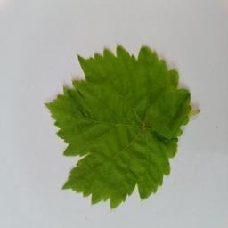
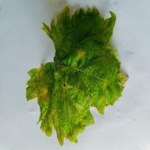
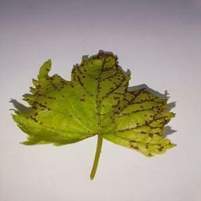
El problema
A partir de una foto, ¿la hoja está sana o tiene una de estas enfermedades?
El sistema informa la clase y su probabilidad. Decide el ingeniero agrónomo.
Los datos
2726
fotos del dataset
→
2393
sin las 333 copias exactas
Pocas fotos de mancha bacteriana y 324 copias casi iguales que el MD5 no detecta: hay que cuidar que no queden repartidas entre entrenamiento y prueba.
La idea: 2 redes

UNet
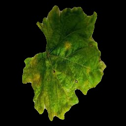
CNN
MobileNetV2
Mildiu 92%
Oídio 5%
Sana 2%
Mancha 1%
Pregunta central: ¿la red mira la hoja… o mira el fondo?
Parte 1 · Segmentar la hoja
No había máscaras: las hicimos
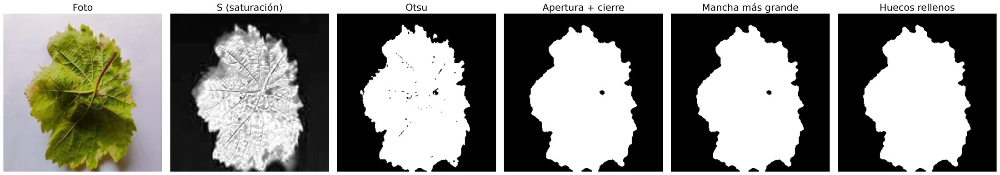
2393
automáticas
(por saturación)
69
descartadas
(revisadas a ojo)
50
corregidas a mano
(test)
39
difíciles de train
corregidas a mano
La UNet original
Dice, píxel por píxel, si es hoja o fondo
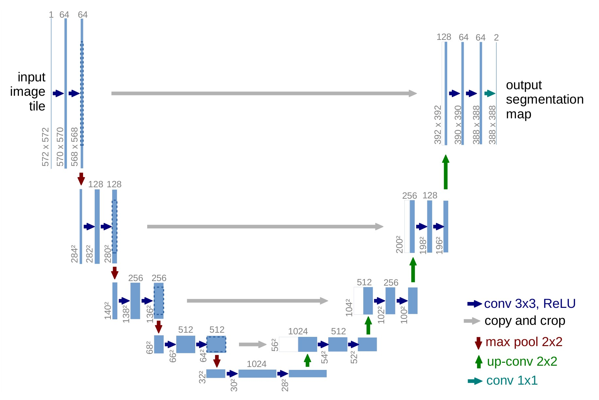
Primer resultado
IoU en test
0.919
Truco automático: 0.934
UNet Truco
Train · 1542
Val · 332
Test · 50
¿Qué pasó al entrenar?
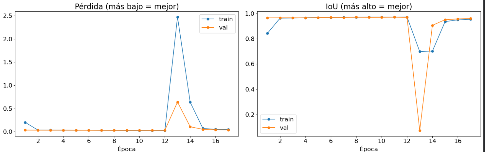
En la época 13 se rompe: la pérdida se dispara y el IoU se cae
Red muy grande (31 millones de parámetros) y sin BatchNorm
La solución: BatchNorm
Ordena los números entre capas → el entrenamiento queda estable
Además
- Red 4 veces más chica (31 M → 7,8 M)
- Loss BCE + Dice
- Más aumentación
- Mancha bacteriana ×4
IoU en test
0.919 ↓
0.931
y sin picos
Cambiamos el encoder
MobileNetV2 preentrenada, en lugar de aprender desde cero
IoU en test: 0.931 → igual que antes
El techo no era la red: eran los datos
Resumen: qué mejoró la UNet
IoU en las 50 fotos de test (las barras empiezan en 0.88)
Lo que más sirvió: mejores datos, más que cambiar la red
2393 hojas sin fondo
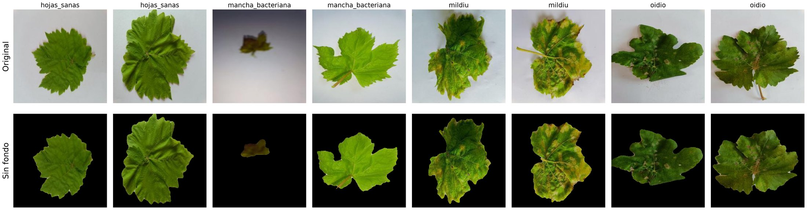
Y en una foto de viñedo real, que nunca vio:
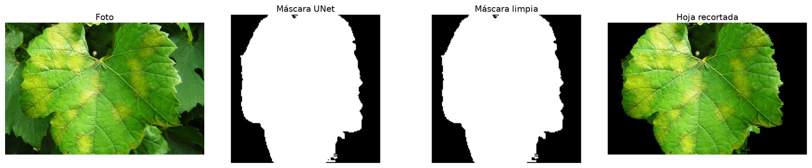
Parte 2 · Clasificar
MobileNetV2 + transfer learning
MobileNetV2
ya entrenada con ImageNet
2.257.984
parámetros
4 neuronas
una por clase
5.124
parámetros nuevos
Fase 1
MobileNetV2 congelada: solo aprende la capa nueva
Fase 2
Se ajustan las últimas 35 capas, de a poco
El experimento
La misma red, las mismas fotos.
Solo cambia el fondo.
A con fondo
B sin fondo (UNet)
recortada a la hoja, sobre gris
5 folds por grupos · test fijo de 359 fotos · Macro-F1
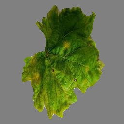
deslizá sobre la foto
En laboratorio: empate · 359 fotos de test
A · con fondo
0.966
Macro-F1 · 11 errores
B · sin fondo
0.974
Macro-F1 · 11 errores
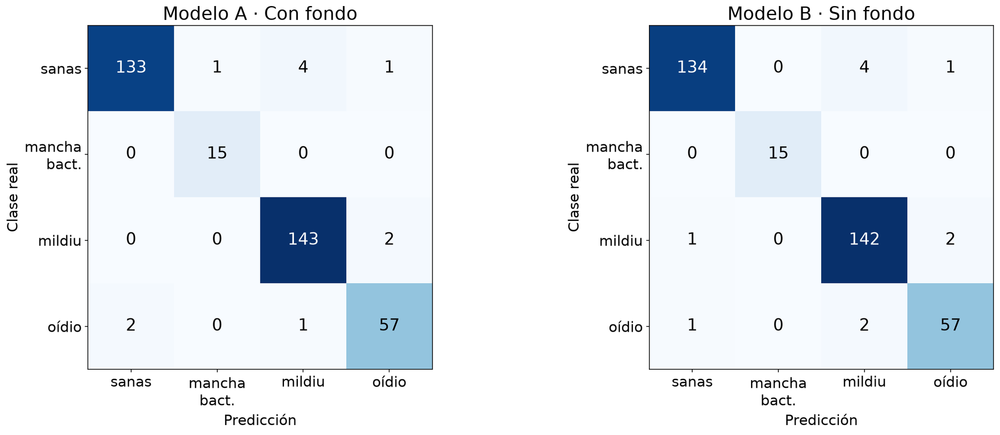
Los dos encuentran las 15 de mancha bacteriana; A confunde una sana con mancha, B no.
¿Dónde mira la red?
Grad-CAM
Rojo = lo que más pesó para decidir
A a veces mira el fondo
B mira siempre la hoja
Fotos donde A y B no coinciden: a veces falla uno, a veces el otro
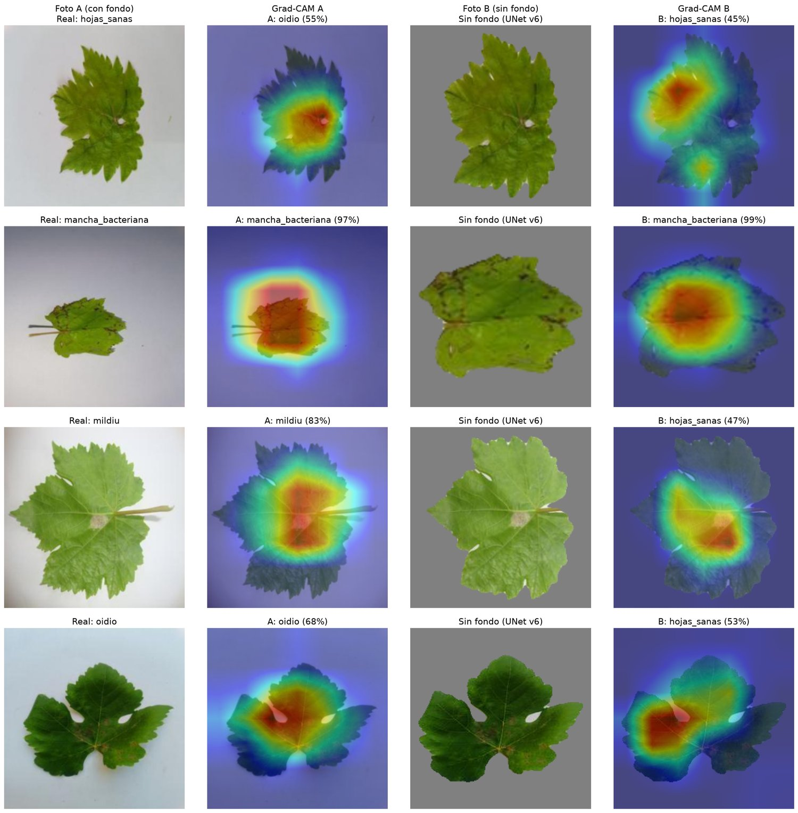
La prueba de fuego: el campo
1432 fotos de viñedo real (iNaturalist, GBIF y otros) que la red nunca vio
A · con fondo
0.37
Macro-F1
B · sin fondo
0.47
Macro-F1
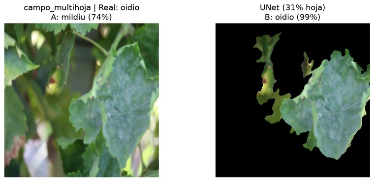
A aprendió un atajo:
"fondo verde = hoja sana"
¿Por qué?
Anduvo bien
- Fotos de laboratorio, todas parecidas
- Transfer learning: ya sabía "ver"
- Sin fondo, la red mira la hoja
Anduvo mal en el campo
- Solo vio fotos de laboratorio
- Mildiu por abajo de la hoja → parece oídio
- Varias hojas juntas: la UNet recorta mal
Quitar el fondo no mejora en laboratorio, pero generaliza mejor
Es una aproximación
- Siempre elige 1 de sus 4 clases
- Una mancha puede ser otra cosa: nutrientes, agua, sol, insectos, químicos…
- No da recomendaciones: decide el agrónomo
Trabajo futuro: entrenar con fotos de campo
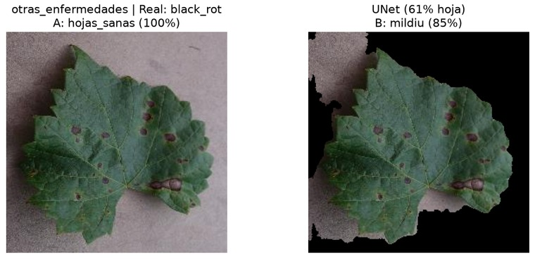
Probémoslo
Subimos una foto y vemos qué responde
Abrir la aplicaciónLa app tiene que estar abierta en la compu: python app/app.py
¿Preguntas?
Enzo Sorrenti · Martin Bellone